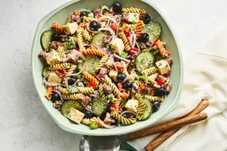

Pasta Recipe

Original Italian pasta Recipe
The receipe below depicts the authentic pasta from Italian cusine.
You can try the steps below to enjoy some delicious pasta right in your house, plus it's easy and quick to prepare too.
Ingredients
- store bought italian pasta
- tomato paste
- olive oil
- garlic
- italian herbs and seasonings
- basic kitchen untensils and condiments
- clarified butter
Steps to follow
- Gather all ingredients.
- Dissolve yeast and sugar in warm water that's 110 degrees F (44 degrees C) in a small bowl. Let stand until yeast softens and begins to form a creamy foam, about 5 to 8 minutes.
- Combine 1 3/4 cups flour and salt in a large bowl. Pour in yeast mixture; mix well until dough comes together.
- Transfer dough to a floured surface and knead until smooth, about 2 minutes. Add remaining 1/4 cup flour if dough is too sticky.
- Roll dough into a 12-inch circle. Transfer to a greased pizza pan.
- Add your favorite toppings, and bake. Enjoy!
Steps to follow
- Gather all ingredients..
- Bring a large pot of lightly salted water to a boil. Add rotini and cook until tender yet firm to the bite, 8 to 10 minutes. Drain, rinse with cold water, and drain again.
- Transfer drained, cooked pasta to a large bowl. Add pepperoni, provolone cheese, red onion, cucumber, bell peppers, olives, parsley, and Parmesan cheese.
- Mix olive oil, vinegar, garlic, basil, oregano, ground mustard, salt, and pepper for dressing in a jar with a lid. Seal the jar, and shake until well combined.
- Pour dressing over the pasta salad; toss until well coated. Serve immediately, or cover and chill in the refrigerator for up to 8 hours before serving.